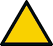
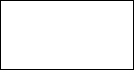
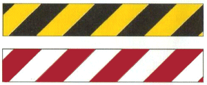

(1) Sicherheitszeichen und Zusatzzeichen müssen den festgelegten Gestaltungsgrundsätzen nach Tabelle 1 bzw. 2 entsprechen. Die Bedeutung von geometrischer Form und Sicherheitsfarbe für Sicherheitszeichen sind der Tabelle 1 zu entnehmen.
(2) Für die in Anhang 1 festgelegten Sicherheitsaussagen dürfen nur die entsprechend zugeordneten Sicherheitszeichen verwendet werden. Es besteht die Möglichkeit der Verwendung von Zusatzzeichen, die der Verdeutlichung besonderer Situationen oder der Konkretisierung der Sicherheits- und Gesundheitsschutzaussage dienen.
(3) Brandschutzzeichen können in Verbindung mit einem Richtungspfeil als Zusatzzeichen nach Abb. 1 verwendet werden.
Abb. 1: Richtungspfeile für Brandschutzzeichen
(4) Rettungszeichen für Mittel und Einrichtungen zur Ersten Hilfe können in Verbindung mit einem Richtungspfeil als Zusatzzeichen nach Abb. 2 verwendet werden.
Abb. 2: Richtungspfeile für Rettungszeichen sowie für Mittel und Einrichtungen zur Ersten Hilfe
(5) Eine Anhäufung von Sicherheitszeichen ist zu vermeiden. Ist das Sicherheitszeichen nicht mehr notwendig, ist dieses zu entfernen.
Tabelle 1: Kombination von geometrischer Form und Sicherheitsfarbe und ihre Bedeutung für Sicherheitszeichen
| Geometrische Form | Bedeutung | Sicher- heits- farbe |
Kontrast- farbe zur Sicherheits- farbe |
Farbe des graphischen Symbols | Anwendungsbeispiele |
Kreis mit Diagonalbalken |
Verbot | Rot | Weißa | Schwarz |
|
Kreis |
Gebot | Blau | Weißa | Weißa |
|
 gleichseitiges Dreieck mit gerundeten Ecken |
Warnung | Gelb | Schwarz | Schwarz |
|
Quadrat |
Gefahr- losigkeit |
Grün | Weißa | Weißa |
|
Quadrat |
Brandschutz | Rot | Weißa | Weißa |
|
a Die Farbe Weiß schließt die Farbe für langnachleuchtende Materialien unter Tageslichtbedingungen, wie in ISO 3864-4, Ausgabe März 2011 beschrieben, ein. Die in den Spalten 3, 4 und 5 bezeichneten Farben müssen den Spezifikationen von ISO 3864-4, Ausgabe März 2011 entsprechen. Es ist wichtig, einen Leuchtdichtekontrast sowohl zwischen dem Sicherheitszeichen und seinem Hintergrund als auch zwischen dem Zusatzzeichen und seinem Hintergrund zu erzielen (z. B. Lichtkante). |
|||||
Tabelle 2: Geometrische Form, Hintergrundfarben und Kontrastfarben für Zusatzzeichen
| Geometrische Form | Bedeutung | Hinter- grundfarbe |
Kontrast- farbe zur Hinter- grundfarbe |
Farbe der zusätzlichen Sicherheitsinformation |
 Rechteck |
Zusatz- informationen |
Weiß | Schwarz | beliebig |
| Farbe des Sicherheits- zeichens |
Schwarz oder Weiß |
(6) Sicherheitszeichen sind deutlich erkennbar und dauerhaft anzubringen. Deutlich erkennbar bedeutet unter anderem, dass Sicherheitszeichen in geeigneter Höhe - fest oder beweglich - anzubringen sind und die Beleuchtung (natürlich oder künstlich) am Anbringungsort ausreichend ist. Verbots-, Warn- und Gebotszeichen müssen sichtbar, unter Berücksichtigung etwaiger Hindernisse am Zugang zum Gefahrbereich angebracht werden. Besonders in lang gestreckten Räumen (z. B. Fluren) sollen Rettungs- bzw. Brandschutzzeichen in Laufrichtung jederzeit erkennbar sein (z. B. Winkelschilder).
(7) Ist eine Sicherheitsbeleuchtung nicht vorhanden, muss die Erkennbarkeit der notwendigen Rettungs- und Brandschutzzeichen durch Verwendung von langnachleuchtenden Materialien auch bei Ausfall der Allgemeinbeleuchtung erhalten bleiben. Langnachleuchtende Sicherheitszeichen müssen mindestens die Anforderungen der DIN 67510-1:2020-05, Klasse C, erfüllen. Die ausreichende Anregung der langnachleuchtenden Materialien ist sicherzustellen, z. B. hinsichtlich Dauer, Art und Intensität der Beleuchtung.
(8) Sicherheitszeichen müssen aus solchen Werkstoffen bestehen, die gegen die Umgebungseinflüsse am Anbringungsort widerstandsfähig sind. Bei der Auswahl der Werkstoffe sind unter anderem mechanische Einwirkungen, feuchte Umgebung, chemische Einflüsse, Lichtbeständigkeit, Versprödung von Kunststoffen sowie Feuerbeständigkeit zu berücksichtigen.
(9) Bei der Auswahl von Sicherheitszeichen ist der Zusammenhang zwischen Erkennungsweiten und Größe der Sicherheitszeichen bzw. Schriftzeichen zu berücksichtigen (Tabelle 3). Für innenbeleuchtete Sicherheitszeichen in Dauerlichtschaltung verdoppelt sich die Erkennungsweite bei gleichbleibender Zeichengröße.
Tabelle 3: Vorzugsgrößen von Sicherheits-, Zusatz- und Schriftzeichen für beleuchtete Zeichen, abhängig von der Erkennungsweise
| Erkennungsweite [m] |
Schriftzeichen (Ziffern und Buchstaben) Schriftgröße (h) [mm] |
Verbots- und Gebotszeichen Durchmesser (d) [mm] |
Warnzeichen Basis (b) [mm] |
Rettungs-, Brandschutz- und Zusatzzeichen Höhe (a) [mm] |
| 0,5 | 2 | 12,5 | 25 | 12,5 |
| 1 | 4 | 25 | 50 | 25 |
| 2 | 8 | 50 | 100 | |
| 3 | 10 | 100 | 50 | |
| 4 | 14 | 200 | ||
| 5 | 17 | 200 | ||
| 6 | 20 | 100 | ||
| 7 | 23 | 300 | ||
| 8 | 27 | |||
| 9 | 30 | 300 | ||
| 10 | 34 | 400 | ||
| 11 | 37 | 150 | ||
| 12 | 40 | |||
| 13 | 44 | 400 | 600 | |
| 14 | 47 | |||
| 15 | 50 | |||
| 16 | 54 | 200 | ||
| 17 | 57 | 600 | ||
| 18 | 60 | |||
| 19 | 64 | |||
| 20 | 67 | 900 | ||
| 21 | 70 | 300 | ||
| 22 | 74 | |||
| 23 | 77 | |||
| 24 | 80 | |||
| 25 | 84 | 900 | ||
| 26 | 87 | |||
| 27 | 90 | |||
| 28 | 94 | |||
| 29 | 97 | |||
| 30 | 100 |
(1) Die Kennzeichnung von Hindernissen und Gefahrstellen ist durch gelb-schwarze oder rot-weiße Streifen (Sicherheitsmarkierungen) deutlich erkennbar und dauerhaft auszuführen (siehe Abb. 3). Die Streifen sind in einem Neigungswinkel von etwa 45° anzuordnen. Das Breitenverhältnis der Streifen beträgt 1:1. Die Kennzeichnung soll den Ausmaßen der Hindernisse oder Gefahrstellen entsprechen.

Abb. 3: Sicherheitsmarkierungen
(2) Gelb-schwarze Streifen sind vorzugsweise für ständige Hindernisse und Gefahrstellen zu verwenden (z. B. Stellen, an denen besondere Gefahren des Anstoßens, Quetschens, Stürzens bestehen). Bei langnachleuchtender Ausführung wird die Erkennbarkeit der Hindernisse bei Ausfall der Allgemeinbeleuchtung erhöht.
(3) Rot-weiße Streifen sind vorzugsweise für zeitlich begrenzte Hindernisse und Gefahrstellen zu verwenden (z. B. Baugruben).
(4) An Scher- und Quetschkanten mit Relativbewegung zueinander sind die Streifen gegensinnig geneigt zueinander anzubringen.
(1) Die Kennzeichnung von Fahrwegsbegrenzungen ist farbig, deutlich erkennbar sowie durchgehend auszuführen. Wird die Markierung auf dem Boden angebracht, so kann dies z. B. durch mindestens 5 cm breite Streifen oder durch eine vergleichbare Nagelreihe (mindestens drei Nägel pro Meter), in einer gut sichtbaren Farbe - vorzugsweise Weiß oder Gelb - mit ausreichendem Kontrast zur Farbe der Bodenfläche erreicht werden.
(2) Eine Verwendung von langnachleuchtenden Produkten für die Markierung von Fahrwegen hat den Vorteil, dass bei Ausfall der Allgemeinbeleuchtung die Sicherheitsaussage für eine bestimmte Zeit aufrechterhalten bleibt.
(1) Leuchtzeichen sind deutlich erkennbar anzubringen. Die Helligkeit (Leuchtdichte) der abstrahlenden Fläche muss sich von der Leuchtdichte der umgebenden Flächen deutlich unterscheiden, ohne zu blenden.
(2) Leuchtzeichen dürfen nur bei Vorliegen von zu kennzeichnenden Gefahren oder Hinweiserfordernissen in Betrieb sein. Die Sicherheitsaussage von Leuchtzeichen darf nach Wegfall der zu kennzeichnenden Gefahr nicht mehr erkennbar sein. Dies kann durch Verdecken der abstrahlenden Fläche erreicht werden.
(3) Leuchtzeichen für eine Warnung dürfen intermittierend ("blinkend") nur dann betrieben werden, wenn eine unmittelbare Gefahr droht. Diese Forderung bedeutet, dass warnende Leuchtzeichen kontinuierlich oder intermittierend, hinweisende Leuchtzeichen ausschließlich kontinuierlich betrieben werden dürfen.
(4) Wird ein intermittierend betriebenes Warnzeichen anstelle eines Schallzeichens oder zusätzlich eingesetzt, müssen die Sicherheitsaussagen identisch sein.
(1) Schallzeichen müssen deutlich wahrnehmbar und ihre Bedeutung betrieblich festgelegt und eindeutig sein.
(2) Schallzeichen müssen so lange eingesetzt werden, wie dies für die Sicherheitsaussage erforderlich ist.
(3) Ein betrieblich festgelegtes Notsignal muss sich von anderen betrieblichen Schallzeichen und von den beim öffentlichen Alarm verwendeten Signalen unverwechselbar unterscheiden. Der Ton des betrieblich festgelegten Notsignals soll kontinuierlich sein.
Die verbale Kommunikation muss kurz, eindeutig und verständlich formuliert sein. Im Rahmen der Gefährdungsbeurteilung ist für besondere Einsatzsituationen die Verwendung von technischen Einrichtungen (z. B. Lautsprecher, Megaphon) festzulegen.
(1) Handzeichen müssen eindeutig eingesetzt werden, leicht durchführbar und erkennbar sein und sich deutlich von anderen Handzeichen unterscheiden. Handzeichen, die mit beiden Armen gleichzeitig erfolgen, müssen symmetrisch gegeben werden und dürfen nur eine Aussage darstellen.
(2) Für die in Anhang 2 aufgeführten Bedeutungen von Handzeichen dürfen nur die dort zugeordneten Handzeichen verwendet werden.
(3) Einweiser müssen geeignete Erkennungszeichen, vorzugsweise in gelber Ausführung, tragen (z. B. Westen, Kellen, Manschetten, Armbinden, Schutzhelme). Um eine gute Wahrnehmung zu erzielen, können Erkennungszeichen je nach Einsatzbedingungen (z. B. langnachleuchtend oder retroreflektierend) ausgeführt sein.